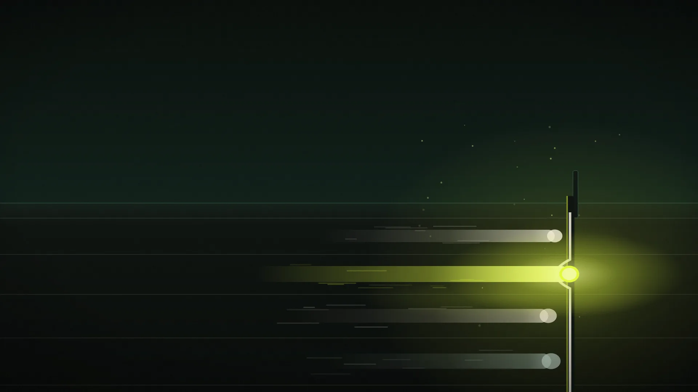

Four labs. Seven days. No clear winner.
Opus 4.7 launched on 16 April. GPT-5.5 followed on 23 April. DeepSeek V4 dropped on 24 April. Six months ago this was a two-horse race. Today it is a fragmented frontier, and that changes how anyone serious about AI should buy, build, and bet.

How deep do you want to go? Pick a level and the article rewrites itself.
I have been a business analyst for twenty years. I have lived through enterprise software cycles measured in quarters. I have lived through SaaS cycles measured in months. The frontier AI cycle in April 2026 is measured in days, and that is not a metaphor.
Anthropic shipped Claude Opus 4.7 on 16 April. OpenAI shipped GPT-5.5 on 23 April. DeepSeek dropped V4-Pro and V4-Flash on 24 April. Three frontier-class releases in nine days, two of them claiming agentic-AI leadership and going head-to-head on identical pricing tiers. Anthropic also confirmed a model called Claude Mythos on 7 April that the company has explicitly chosen not to release publicly because it can identify zero-day vulnerabilities by itself.
For anyone trying to build a strategy on top of this, the pace is the story before the models are the story. Q1 2026 alone saw 255 frontier-class model releases tracked by LLM Stats. The Artificial Analysis Intelligence Index sat at a ceiling of 57 for two months because four labs were converging on the same wall, until GPT-5.5 broke through last week with a score of 60. The frontier is not just moving. It is moving in lockstep, with three or four labs landing within a few benchmark points of each other on six-week cycles.
The pace problem nobody is solving for.
Every enterprise AI strategy I have seen written before March 2026 is already obsolete in some material way. Not because the strategies were wrong. Because the assumptions about cadence were wrong.
If your AI roadmap names a specific model (“we will standardise on Opus 4.6” or “GPT-5.4 powers our copilot”), that line is either already out of date or about to be. The teams reporting the highest satisfaction in 2026 are not the ones who picked the best model. They are the ones who built model-agnostic architectures and run quick A/B comparisons whenever a new release lands. The model is the least stable layer of the stack now. The retrieval, the tools, the routing, the agent infrastructure: those are where compounding value lives.
This is the frame to read everything below in.
The frontier, model by model.
Six general-purpose models matter in April 2026. Three are American closed-weight (Opus 4.7, GPT-5.5, Gemini 3.1 Pro). Two are Chinese open-weight (DeepSeek V4-Pro, GLM-5.1). One is American with a Twitter-shaped chip on its shoulder (Grok 4.20). Mistral and Llama 4 sit on the periphery and matter for different reasons. Below: each one as it actually behaves, not as it is marketed.
The supporting cast
Llama 4 Maverick (Meta, April 2025): 400B parameters, 1M context, MoE, $0.20/$0.60 via API providers. Genuinely useful for batch and retrieval workloads, but coding lags badly and the licence explicitly prohibits use by EU-domiciled entities for vision features. Meta's surprise pivot to Muse Spark on 8 April 2026, its first proprietary closed model, quietly signals that the open-source-everything era at Meta is over. GLM-5.1 (Zhipu AI, 7 April, MIT licence) reportedly beats Opus 4.6 and GPT-5.4 on SWE-bench Pro. Mistral Small 4 / Large 3 remain the credible European option, more on which below.
The capability matrix.
Where each model leads, based on the most-cited third-party benchmarks across OpenAI, Anthropic, Google DeepMind, Artificial Analysis, and partner reports as of 28 April 2026. Highlighted figures indicate the category leader among generally available models. Mythos sits above the line in absolute terms but is not deployable.
| Benchmark | Opus 4.7 | GPT-5.5 | Gemini 3.1 Pro | DeepSeek V4-Pro | Grok 4.20 |
|---|---|---|---|---|---|
| SWE-bench Pro (coding) | 64.3% | 58.6% | 54.2% | ~58% | n/r |
| SWE-bench Verified | 87.6% | n/r | 80.6% | 80.6% | n/r |
| Terminal-Bench 2.0 (agentic) | 69.4% | 82.7% | 68.5% | 67.9% | n/r |
| GPQA Diamond (PhD reasoning) | 94.2% | ~94% | 94.3% | ~91% | n/r |
| ARC-AGI-2 (novel reasoning) | n/r | n/r | 77.1% | n/r | n/r |
| OSWorld-Verified (computer use) | 78.0% | 78.7% | n/r | n/r | n/r |
| BrowseComp (web research) | 79.3% | 89.3% | 85.9% | n/r | n/r |
| FrontierMath Tier 4 | 22.9% | 35.4% | 16.7% | n/r | n/r |
| Multilingual Q&A (MMMLU) | 91.5% | 83.2% | 92.6% | ~88% | n/r |
| Hallucination rate (lower better) | 36% | 86% | 50% | n/r | 22%* |
| Context window | 1M | 1M | 1M | 1M | 2M |
| Input price (per 1M tokens) | $5 | $5 | $2 | $1.74 | $2 |
| Output price (per 1M tokens) | $25 | $30 | $12 | $3.48 | $6 |
n/r = not reported by lab or third party at time of writing. Mythos (Anthropic, restricted) leads every category but is not generally available. Hallucination figures use AA-Omniscience methodology where comparable; *Grok's figure uses Artificial Analysis non-hallucination rate, methodology differs.
No single model wins. The competition stopped being about which model is smarter and became about which one fits your specific workflow at your specific budget.
Six months ago vs today.
This is where the article you are reading earns its keep. The April 2026 picture only makes sense against where we were in October 2025: six months and a different epoch ago.
October 2025: a two-horse race with a Chinese spoiler
Six months ago, the frontier looked like this. GPT-5 had launched in August. Claude Opus 4.5 was on the way (it shipped in November). Gemini 3 Pro was Google's response, due in December. Grok 4.1 was Musk's stake. The narrative was binary: OpenAI versus Anthropic, with Google catching up and DeepSeek as the cost-leader gadfly that had spooked NVIDIA's stock back in January 2025.
The benchmark numbers tell the same story. SWE-bench Verified leadership in October 2025 sat in the mid-70s. ARC-AGI-2 was a wall: best models scored in the 30s. Computer use was a research demo. Long-context retrieval at 1M tokens was a marketing number; accuracy collapsed past 100K. The Artificial Analysis Intelligence Index leader scored ~50.
April 2026: a fragmented frontier with seven-day cycles
What has changed in 180 days:
- SWE-bench Verified leadership has moved from ~75% to 87.6%. Opus 4.7 alone added a 7-point jump in one release. Mythos (restricted) sits at 93.9%.
- ARC-AGI-2 has moved from 31% to 77.1%. Gemini 3.1 Pro more than doubled the previous best. The wall came down.
- Computer use has moved from research demo to production-viable. GPT-5.5 hits 78.7% on OSWorld-Verified, above the 72% human baseline. Codex has 4 million active users.
- Long-context retrieval works at 1M tokens. GPT-5.5 went from 36.6% to 74.0% on MRCR v2 in one release. The marketing number is now functional.
- Native omnimodality is the baseline. Six months ago, video and audio were bolted-on adapters. GPT-5.5 and Gemini 3.1 Pro process them in one architecture.
- Composite intelligence broke through 57. The AA Index ceiling held for two months while four labs converged on it. GPT-5.5 broke through to 60 last week.
- Open-source closed the gap to weeks, not months. DeepSeek V4-Pro is within 0.2 SWE-bench points of Opus 4.6 at one-seventh the price. GLM-5.1 reportedly beats it on SWE-bench Pro.
- Anthropic shipped a model it then withheld. Mythos exists, can find zero-day vulnerabilities autonomously, and is gated behind 50 cybersecurity partners. This had no precedent before April 2026.
- Release cadence compressed from quarterly to weekly. 12 significant model releases in one week of March 2026. Q1 totalled 255.
Anyone who paused their AI strategy in October 2025 to “see where this lands” is now eighteen months behind a moving target. The target is not slowing.
In October 2025, frontier AI was a question of which lab leads. By April 2026, it is a question of which model fits the specific shape of the work you are trying to do. And that question changes every six weeks.
The European angle.
Three things matter for European readers that do not show up in the SWE-bench tables.
Mistral grew up
Between February and April 2026, Mistral went from “European national champion” to something genuinely competitive. €722M in debt financing for a Paris data centre with 13,800 NVIDIA GB300 chips, operational by Q2. €1.2B Sweden investment for 2027. A target of 200MW of European compute capacity. A landmark NVIDIA partnership through the Nemotron Coalition. A three-year framework with the French Ministry of the Armed Forces. Their on-track $1B ARR puts them in the same conversation as second-tier US labs commercially. Mistral Large 3 and Small 4 are both Apache 2.0, the most permissive option on the market for European enterprises with GDPR and data sovereignty constraints.
Mistral CEO Arthur Mensch's argument, repeated everywhere from Davos to GTC, is the one European procurement teams should be paying attention to: “You cannot have AI sovereignty if all your compute runs on American cloud infrastructure.” Whether you agree or not, it is now a procurement question, not a philosophical one.
The EU AI Act is no longer theoretical
The high-risk AI obligations of the EU AI Act go fully applicable on 2 August 2026, fourteen weeks from this article going live. By that date, providers and deployers of high-risk systems need: completed conformity assessments, technical documentation, CE marking, EU database registration, and quality management systems in operation. GPAI obligations have been live since August 2025. Transparency rules, including labelling of AI-generated content, also apply from August 2026. Every UK or US-headquartered enterprise selling into the EU is now a deployer.
The Brussels Effect is in full swing. The EU has already opened a formal data-retention order on X over Grok, and put Meta's Llama models under closer scrutiny after Meta refused to sign the GPAI Code of Practice. Adobe, OpenAI, Google, and Microsoft are embedding C2PA watermarking globally because compliance-by-design is cheaper than geofencing. None of this was a serious operational concern six months ago.
The licence question
Llama 4's licence explicitly excludes EU-domiciled entities from vision features. DeepSeek V4 and GLM-5.1 are MIT: no restriction. Mistral models are Apache 2.0: no restriction. Anthropic, Google, and OpenAI offer EU data residency on Bedrock, Vertex AI, and Microsoft Foundry respectively. If you are running AI in regulated industries (financial services, healthcare, education) the licence terms increasingly matter as much as the capability.
What the influencers and the public are saying.
The honest version: the influencer ecosystem in AI has fragmented into three camps, and which one you read shapes which model you think is winning.
The Anthropic-leaning analysts (DataCamp, Vellum, several developer Substacks) emphasise Opus 4.7's coding lead, the verified self-checking behaviour, and the safety story around Mythos. Simon Willison's “almost on the frontier, a fraction of the price” framing for DeepSeek V4 captures the mood among technical evaluators: the gap is narrowing fast and they are watching it weekly. The general analyst consensus: Claude leads on natural prose and code quality on hard problems; quality preferences haven't shifted as fast as benchmark numbers.
The OpenAI-leaning ecosystem (TechCrunch, BigGo, agencies built on the OpenAI API) emphasises the agentic story, the super-app framing, and ChatGPT's distribution. The line that gets repeated most often: enterprise AI procurement is consolidating, OpenAI has 35.2% paid-business penetration in the US, Anthropic 30.6%. Whoever has the desktops wins.
The Google-leaning ecosystem (Visual Capitalist, Stratechery, Gemini-on-Workspace agencies) emphasises the price collapse (Gemini 3.1 Pro at frontier capability for $2/$12) and Google's distribution: 750M Gemini app users, 15–25M paying subscribers across AI Pro and AI Ultra, AI Overviews in Search.
On the public side, two signals stand out. First, the Ramp data: the gap between OpenAI and Anthropic in paid US business adoption shrank from roughly 3× to 4.5 percentage points in twelve months. Second, the most cited consumer AI publications increasingly recommend using two or three tools in parallel rather than picking one. AI Magicx's quarterly multi-tool comparison summed it up: “There is no 'best' AI assistant. There are four products each occupying a defensible niche.”
The contrarian view, worth taking seriously: OpenAI Chief Scientist Jakub Pachocki said at the GPT-5.5 launch that the last two years of model progress have been “surprisingly slow.” He and Brockman pitched 5.5 as “a new class of intelligence.” That is either marketing or a tell, depending on who you read. The benchmark numbers do not obviously support “slow”, but the people inside the labs may know something the leaderboards don't.
On the horizon: rumours and roadmaps.
What I believe is real, ranked by my confidence:
High confidence
- GPT-6 in Q3 2026. Pre-training completed 24 March. The codename “Spud” was actually attached to GPT-5.5, but a successor base model is in safety evaluation. May 2026 is the aggressive scenario, June–August more realistic given the IPO preparation OpenAI is reportedly in.
- Claude Mythos broader release in late 2026. Anthropic explicitly said it would “launch new safeguards with an upcoming Claude Opus model” before deploying Mythos-class capabilities widely. Opus 4.7 appears to be that model. Once the safeguards are validated, expect a controlled GA.
- Gemini 3.1 Ultra in Q2 2026. Google's Deep Think tier is already in production. The 2M context, native multimodal Ultra version is the obvious next step.
- Grok 5 in Q2 2026. Training on xAI's Colossus 2 supercluster, reportedly a 6-trillion-parameter MoE. It would be the largest publicly announced model ever if Musk's claims hold.
Medium confidence
- An OpenAI “super app” combining ChatGPT, Codex, an AI browser, Operator. Brockman mentioned it on the press call for GPT-5.5. The Workspace Agents launch on 22 April was the supporting move.
- DeepSeek V4 stable release with reasoning improvements in May 2026. The current preview cards explicitly note the “Pro” reasoning mode is still maturing.
- GLM-5.1 fine-tunes proliferating. MIT licence plus frontier-class SWE-bench Pro performance is unusual. Expect hundreds of specialised forks within ninety days.
Lower confidence: watch this space
- Llama 5 may not be open weights. Meta delayed Llama's successor in late 2025, leadership has changed, and the Muse Spark launch on 8 April was Meta's first proprietary model. The thesis that “Meta's best models will always be free” has cracks.
- EU regulatory action on a frontier lab before August 2026. The X/Grok data retention order and Meta investigation suggest the AI Office is ready to use the Act in tandem with antitrust law.
- Claude Sonnet 4.7 / Haiku 4.6. Anthropic typically ships the smaller models 1–2 months after the Opus update.
The discount-it section
The “GPT-5.5 is 2 weeks away” / “Claude 5 imminent” content from before 23 April was largely social-media churn. Most of the dramatic capability speculation came from accounts with skin in the game. The leaderboard moves more than the marketing suggests, but the marketing moves more than the underlying capability sometimes does.
What this means if you have to choose.
If you are a senior person making AI procurement or platform decisions in 2026, here is the honest decision tree, stripped of vendor narrative:
If the work is agentic coding or long-running autonomous tasks: Claude Opus 4.7 first, GPT-5.5 second. Both above the rest. Use Opus 4.7 if the agent will run unsupervised; the self-checking matters more than the benchmark score. Use GPT-5.5 if the workflow involves heavy computer-use, web research, or terminal work.
If the work is general-purpose with cost discipline: Gemini 3.1 Pro. Frontier-class capability at a third of Opus's price, with Workspace integration if you live in Google.
If the work is high-volume or sensitive enough to want self-hosting: DeepSeek V4-Pro or GLM-5.1, both MIT-licensed, both within touching distance of the Western frontier on most benchmarks. Mistral if you specifically need EU sovereignty and Apache 2.0.
If the work depends on real-time social signal: Grok 4.20. Otherwise no.
The single best thing to internalise is this: in April 2026, frontier AI has stopped being a leaderboard race and become a portfolio decision. The leaders rotate every 4–6 weeks. The smart organisations route different requests to different models, automate the A/B testing, and accept that vendor lock-in is now the most expensive choice they could make.
Make your stack model-agnostic, your evaluation continuous, and your procurement assumption six weeks.
Go deeper, then get the next issue in your inbox.
The full Substack version has the same map with the extended evidence trail and the bits the article didn't have room for. Subscribe and each new issue lands in your inbox. Practical, evidence-led, no hype.